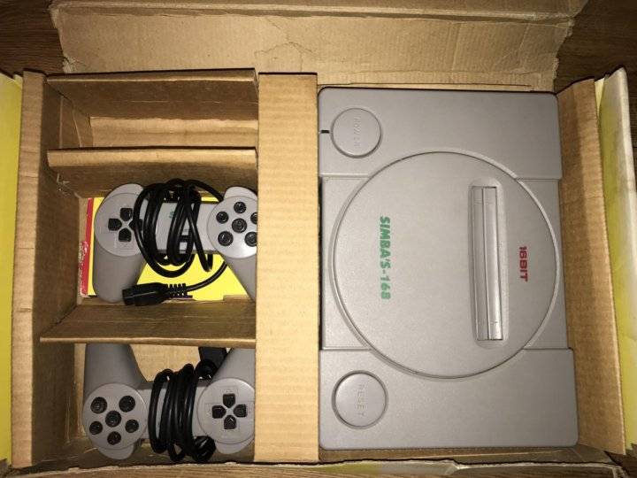

зацепило в последние годы
Prey (2017)
Игра про одиночество на космической станции. Нетривиальный сюжет, интересные механики, сильный сеттинг и неплохие моральные вопросы.
Factorio
Строительство завода, автоматизация, захват новых территорий. Провёл в ней 500+ часов. Держите меня от неё подальше.
Zelda: Breath of the Wild
Просто очень качественная игра, приятная и красивая. Тоже не одна сотня часов.
ретро — познакомился уже взрослым
X-COM: UFO Defense 1993
Оборона от пришельцев. Познакомился в универе, периодически возвращаюсь на несколько вечеров — и снова забрасываю.
The Legend of Zelda 1986
Зашёл неожиданно, уже зная современные части. Удивило насколько продуманными были игры того времени — многие механики дошли до наших дней практически без изменений.
sega mega drive — китайская, в корпусе первой playstation

Urban Strike
Много играл, но в детстве так и не смог пройти.
Rock n' Roll Racing
Гонял много, перепроходил уже во взрослом возрасте.
Operation Europe: Path to Victory
Варгейм, десятки часов. Долго не понимал почему не сохраняется — оказалось, надо было просто вставить батарейку в картридж.
из компьютерного детства
Gothic 2
Невероятно проработанный мир, который интересно исследовать до сих пор. Возвращаюсь раз в несколько лет.
Rome: Total War
Провёл сотни часов в детстве, и ещё заметное время уже во взрослом возрасте. Одна из любимых игр. Кто вообще не думает о Римской империи?
The Suffering
Игра про ужасы в тюрьме на острове. Запомнилась, возможно, просто потому что была одной из первых на моём личном компьютере.
на чём играю
MacBook Pro 14″ M1 Max
64 GB — основная машина, на ней же и играю через GeForce Now.
GeForce Now
Стриминг через MacBook — позволяет играть в тайтлы которые нативно на Mac не идут.
Steam Deck
Базовая версия + Steam Controller. Для дивана и поездок.
Nintendo Wii
Ранняя ревизия с поддержкой GameCube: есть порты и оригинальный контроллер — играю не только в Wii, но и в предыдущее поколение.
Anbernic RG405XX
Вертикальный форм-фактор, для дороги — честно говоря, редко достаю.
HP t620 Plus в процессе
Тонкий клиент — собираю мини-игровую станцию для эмуляции и игр 2000-х, которые на современном железе не хотят нормально работать. Планирую простенькую GeForce на 2GB DDR3 и несколько нативных ОС. Много сил вложено в настройку, но в какой-то момент сжёг материнку — ждёт замены.
Иногда запускаю на них что-нибудь старенькое.